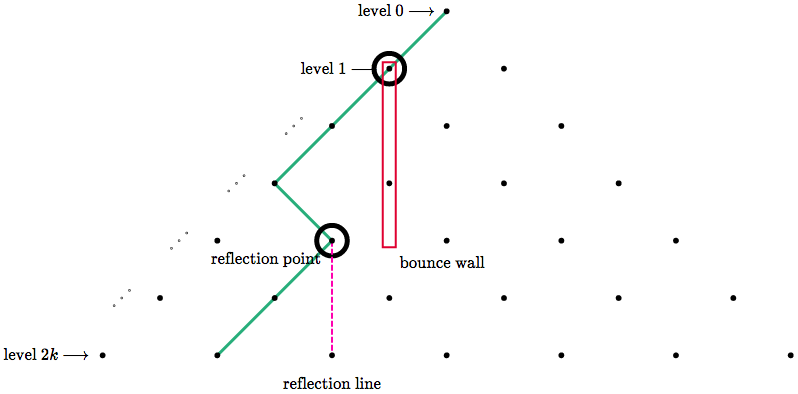

Theorem: $$\sum_{k=0}^{k=n}\binom{2k}{k}\binom{2n-2k}{n-k}=4^n$$
Proof:
We will prove the above using only lattice paths. To read this article, you must first have a basic understanding of lattice paths. An example of a lattice can be found here or here. The second drawing (the orange one) in the linked example shows a lattice that starts in the left corner and expands to the right. Each edge travels diagonally up-right, or diagonally down-right. Our lattices will start at the top corner and expand downward. Each edge on a path travels diagonally left-down, or diagonally right-down.
Consider the lattice below of height $2k$, where each path starts at the top and walks always downward. A red path and an orange path are shown as examples.

I chose to use $2k$ for the height because we will only be dealing with even height lattices today.
Now consider the set of paths from the top to the bottom center (thanks to the even height, there will be a bottom *center*). We will call this the diamond set. Elements of this set are shown below as an example. Each element is painted a single color.

And now consider the set of paths which *avoid* the center line after leaving the top. We call this the fan set, as shown below.
It turns out that there is a beautiful bijection between these sets! And here it is:
Given any diamond path which leaves the top leftwards (rightwards), choose the leftmost (rightmost) column that intersects the path. Choose the bottommost intersection of that column and the path. We will call this point the reflection point.

Draw a vertical line through the reflection point, then reflect the part of the path *below* it across this line.

For the upper section of path (from the **level 1 point** to the **reflection point**), rotate it 180 degrees.
Great scott!
By the nature of reflection, if the reflection wall is $c$ columns from the center, then the bottom fan point is $2c$ columns from the center.
Let us now talk about the inverse of this function:
Take a fan path, and look at the bottom fan point. Count the columns it is away from the center, then divide by $2$ to get the distance of the reflection line from the center. Follow the fan path from the bottom upwards until it touches the reflection line. This intersection is the reflection point! Reflect the bottom piece and rotate the top portion like we did before...
...reflect...
...and rotate...
With a little extra rigor, it can be verified that these are indeed inverses. Therefore, the functions are bijections!
So the number of diamond paths is equal to the number of fan paths! That number is $\binom{2k}{k}$. (Diamond paths have length $2k$, and we must choose exactly $k$ of the edges to be in the diagonally right direction.)
Back to our handy dandy lattice. Consider that the lattice has height $2n$, and we would like to partition the set of all possible lattice paths in a certain way. Every path passes intersects the center line at least once (because the first point of the path intersects the center line). For each path, we can find its bottommost intersection with the center line (and call this the cut point). We will identify each path with the height (say, $2k$) of its cut point, and this partitions the paths.
Each path goes through a cut point at height $2k$ (for some $k$ between $0$ and $n$), then avoids the center line afterward.

Given any path, if we cut it at its cut point, we get two pieces. The piece from the top to the cut point is a diamond path. And the piece from the cut point to the bottom is a fan path. The diamond path (from level $0$ to level $2k$) has $\binom{2k}k$ possibilities, and the fan path (from level $2k$ to level $2n$) has $\binom{2n-2k}{n-k}$ possibilities, and therefore the total number of possibilities is $\binom{2k}{k}\binom{2n-2k}{n-k}$. That is, the part of the partition of cut point height $2k$ contains exactly $\binom{2k}{k}\binom{2n-2k}{n-k}$ lattice paths.

Since this is a partition, summing these from $k=0$ to $k=n$ yields all possible paths!
Finally, we find the total number of paths a different way. Consider you are at the top and want to know the total number of possible paths. You will pass $2n$ levels exactly (levels $0$ through $2n-1$), and as you pass each, you will have exactly $2$ options (left or right). Therefore, the total number of paths is $2^{2n}=4^n$.
Yoinks! $$\sum_{k=0}^{k=n}\binom{2k}{k}\binom{2n-2k}{n-k}=4^n$$